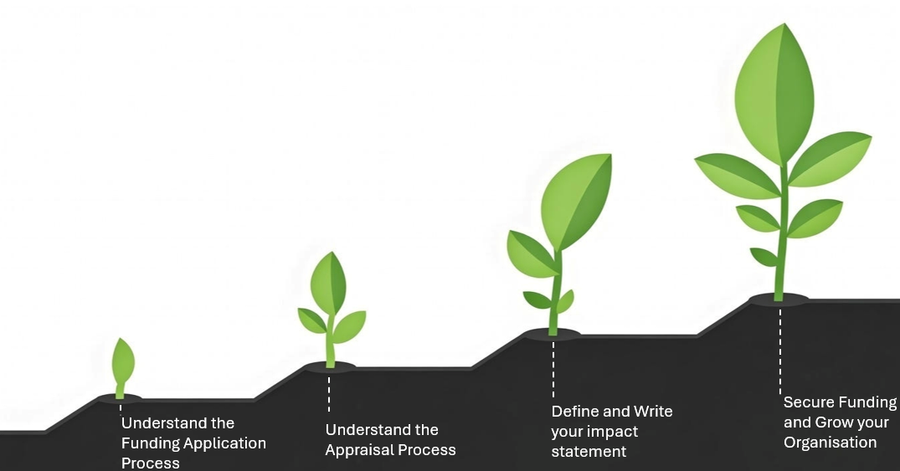
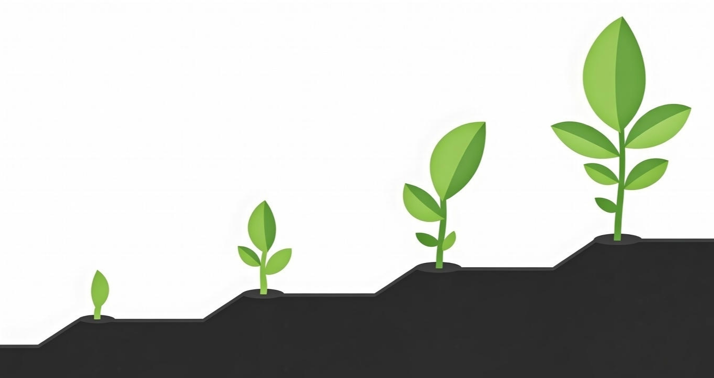
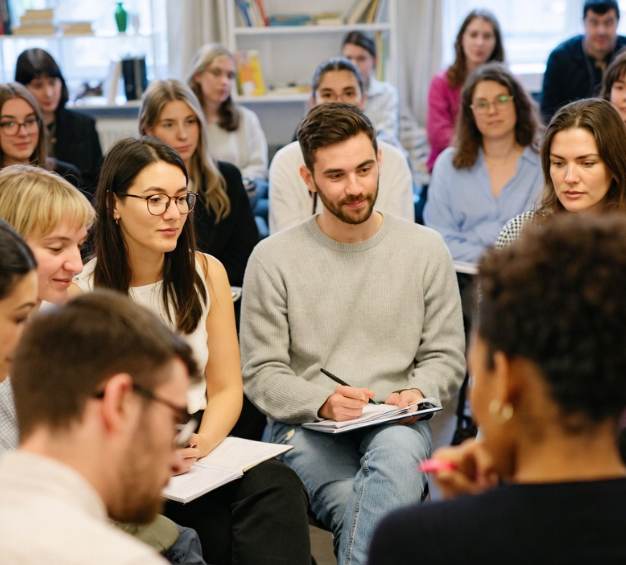

Training & Workshops
Nurture Impact delivers tailored workshops and training programmes for organisations, teams, boards and community and youth development groups. Sessions are practical and jargon-free, built on real sector experience rather than theory.
Subjects can include governance, funding applications, organisational development, strategic planning, community development, youth work, capacity building, team development and board development — this list isn't exhaustive, and every session can be tailored to your organisation's specific requirements.
Training can be delivered as one-off workshops, bespoke training days, or multi-session programmes.
See Events & WorkshopsGovernance & Board Development
Practical support for voluntary boards, trustees and senior leaders navigating the Charities Governance Code, compliance requirements, risk management, and board dynamics.
Delivered through a structured governance masterclass series as well as tailored board development sessions.
Governance & Board Development →Funding & Grant Applications
Nurture Impact has particular expertise in Pobal funding applications, drawing on 20 years of experience working within Pobal and a detailed understanding of the funding environment and application process.
Support extends beyond Pobal alone to funding applications more broadly — understanding requirements, structuring proposals, aligning applications with programme objectives, and building organisational capacity around funding.
Funding & Grant Applications →
Organisational Development & Capacity Building
Support around organisational structures, systems, capacity and long-term sustainability — helping organisations build the foundations they need to deliver their mission effectively.
This can include reviewing organisational structures, supporting restructures, strengthening internal systems and processes, and longer-term capacity building — not just one-off assistance, but building local capacity and resilience over time.
Discuss Your Organisation
Strategy & Planning
Helping organisations develop practical, realistic strategic plans and priorities — grounded in the day-to-day realities of running a community organisation, not theoretical frameworks.
Support can include facilitating strategic planning sessions, developing organisational plans, and helping boards and teams agree clear priorities.
Plan Your Next StepsYouth & Community Development
Over 30 years of experience across a broad range of organisations, programmes and areas of community and youth development work throughout Ireland.
This breadth of experience underpins everything Nurture Impact does — an understanding of how community organisations, youth projects and Local Development Companies actually operate, and what practical support looks like in that context.
More About Nurture Impact
Bespoke Consultancy
Every organisation's needs are different. Nurture Impact works with organisations to identify their specific requirements and develop tailored support — whether that's a single workshop, a longer programme of support, or a one-off piece of consultancy work.
Start a ConversationNot Sure Where to Start?
Get in touch and we'll help identify the right support for your organisation.
or
Get in touch directlyWant to get in touch?
Tell us about your organisation and how Nurture Impact can help
Social & Community Enterprise Support
Guidance for trading organisations balancing mission and market — including support around funding routes such as LEADER and Rethink Ireland, and the particular governance and planning needs of social enterprises.
Get in Touch